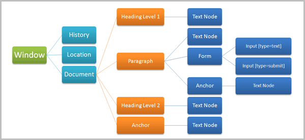

Sistemas Web - IPT
Document Object Model
Camila Coelho Sanches
Reinaldo Nolasco Sanches
Document Object Model
(DOM)
Camila Coelho SanchesReinaldo Nolasco Sanches
API para acessar e manipular elementos de um documento (HTML/XML)
- OMG IDL (Interface Description Language): objetos com atributos e comportamentos (nós)
- www.w3.org/DOM
- dom.spec.whatwg.org
Histórico
- Level 0: Netscape/IE 3.0 (1996)
- Level 1: core objects (1998)
- Level 2: eventos, navegação, estilos (2000)
- Level 3: XPath, DTDs (validação), serialização (2004)
- DOM4 (DOM Living Standard): WebApps Working Group (Apple, Mozilla, Opera, Google)
Propriedades
- nodeName, attributes, parentNode, childNodes, innerHTML...
Métodos
- getElementById
- getElementByTagName
- appendChild
- removeChild
- ...


by positioning, rotating and scaling them on an infinite canvas
the only limit is your imagination
want to know more?
use the source, Luke!
one more thing...
W3C DOM home page
https://www.w3.org/DOMDOM Reference
https://developer.mozilla.org/en-US/docs/DOM/DOM_ReferenceDOM - Living Standard
http://dom.spec.whatwg.org/